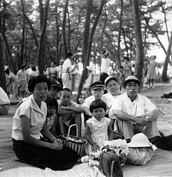
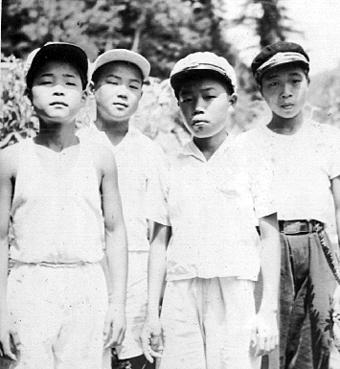
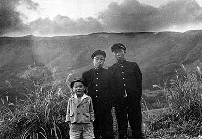
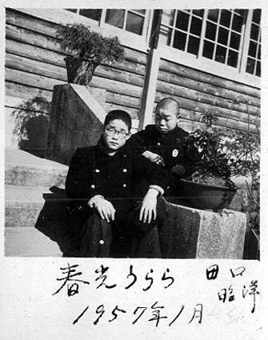
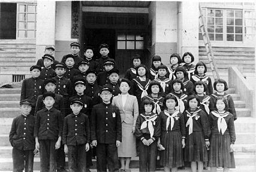
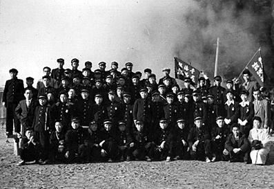
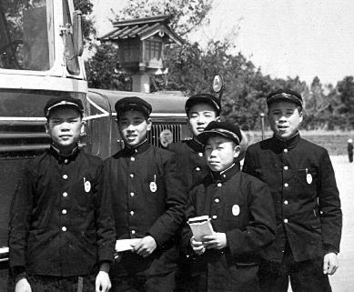
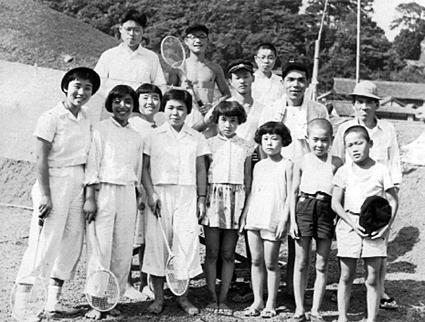

|
幼き頃の記憶はありますか？ 〜 １枚の写真から 〜 |
2002年8月15日
|
|
|
 |
両親と子供４人の集合写真。慰安家族旅行で津屋崎海
水浴場に遊んだ時の１コマ。
左からお袋、すぐ下の弟と長女、お隣の久保山千晶
ちゃん、私と前に次女、親父の同僚・滝本さん、そして親父。
そう言えば、親子６人が一緒に写った写真は、慰安旅
行等の集合写真は別として、これ以外にはないのではないだろうか。
親父とお袋の"若さ"にびっくりします。こんな頃が
あったんですね。
|
|
|
|
宝珠山中学２年生の夏休みの写真。
左から久保くん、永島くん、私、井上先輩。左３人は
同級生。
井上先輩は私を「毎日オリオンズ（現・千葉ロッテマ
リーンズ）」のファンにした"ある物"を持っていた人です。その"ある物"とは、あのオリオンズの強打者・別当薫さんのサイン入りバットと、火の玉投手・
荒巻淳さんのサイン入りボール持っていました。そのバットとボールをしみじみと眺めて以来、かくも長くひとつのプロ野球球団を応援することになったので
す。
|
 |
|
|
|
 |
従業員家族慰安旅行で阿蘇に行った時のスナップ写
真。中央が私。左右の人も覚えがあるのですが、名前を思い出しません。
眼鏡をかけていますので、おそらく「ラジオ製作」に
夢中になっていた中学２年生の秋だと思われます。
|
|
|
|
久保昭洋くんと２ショット。
久保くんの自宅は私の家から近い炭住街にあり、昭洋
くんとよく一緒に遊びました。久保くんのお父上は、当時この宝珠山中学の教師でした。
この写真はよく憶えています。当時２眼レフカメラが
流行しており、数学の樋口藤吉先生がテスト撮影の為、撮って下さった写真です。
この写真では眼鏡をかけていませんが、中学の２年生
頃から視力が低下し、眼鏡をかけ始めました。写真を撮るので外したのかもしれません。
この写真を撮ったちょうど１年後、私は高校受験の為
宝珠山を離れる事になります。
「春光うらら」の文字は久保くんの直筆です。
|
 |
|
|
|
 |
宝珠山中学２年終業記念写真。
担任の先生は、えーと、確か和田先生だと思います。
梶原助役、思い出して下さい。
旧・宝珠山小学校時代、梶原助役とバッテリーを組ん
でいた井上義行くんは最後列左から２番目の大男。
|
|
|
|
宝珠山中学３年生の時の修学旅行集合写真。場所は別
府です。
中学の修学旅行は、別府、宮崎、鹿児島でした。
ちなみに、大行司小学校の修学旅行は別府でした。お
小遣いが１,０００円。８００円の幻灯機を買って帰り、親父やお袋をびっくりさせました。あとの２００円は何に使ったのでしょう。
|
 |
|
|
|
 |
これも中学の修学旅行の写真です。
左から桑野くん、佐々木くん、永島君、私、井上君。
場所は、宮崎かな？ 私が手にしているのは朱印帳です。
その後、永島君はお父上が病死され、親戚を頼って広
島県呉市に引っ越しされました。
私が一番チビですね（笑）。
|
|
|
|
炭住街に住む近所の遊び仲間。ボタ山を造成して作っ
た広場でバトミントンです。
前列右端は私の弟・雅敏、すぐ左が久保山千晶ちゃ
ん。２列目右端は益山さんとその息子さん。益山さんの息子さんは魚釣りが大好きな方でしたが、後年坑内事故で亡くなりました。
|
 |
-----------------------------31811313425343 Content-Disposition: form-data; name="userfile"; filename="" Content-Type: application/octet-stream